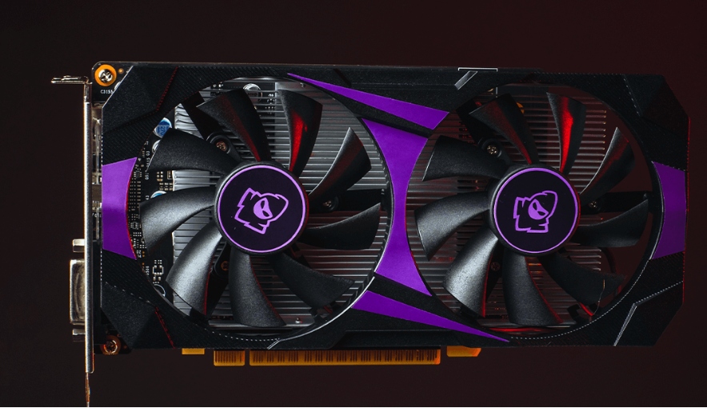

Placa de Vídeo RTX 2060
A Mancer RTX 2060 6GB traz a potência da arquitetura Turing para a sua máquina, oferecendo gráficos incríveis, ray tracing em tempo real e excelente performance em jogos e tarefas criativas. Com 6GB de memória GDDR5, você desfruta de uma jogabilidade suave em 1080p e uma experiência de imersão visual sem igual. Ideal para quem busca desempenho sólido, ela também suporta tecnologias modernas como DLSS. Uma escolha equilibrada para gamers e criadores que querem mais por menos. Seu design compacto também facilita a instalação em diversos tipos de gabinetes. Compre a sua ja